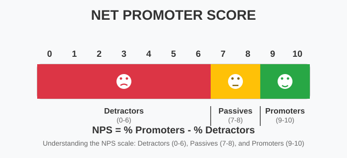

Insights / Sales and people
Creating a Culture of Customer Centricity in Flooring
In today's flooring market, simply doing a good job is no longer enough. Customers have endless choice and easy access to information online, so the real difference comes from the experience a business provides. Shops and service businesses that place the customer at the centre of everything build stronger relationships, inspire loyalty and stand out from their competitors.
Understanding NPS and Its Benefits
The Net Promoter Score, or NPS, is a simple but effective tool that measures customer loyalty. By asking customers how likely they are to recommend your business to others, you get a clear picture of overall satisfaction and where you stand against competitors.

Understanding the NPS scale: Detractors (0-6), Passives (7-8), and Promoters (9-10)
NPS results can be tracked over time and benchmarked against other companies in the same industry or even in other sectors, providing valuable insights into customer experience. Improving your NPS usually leads to more repeat business, positive word-of-mouth referrals, and stronger profit margins.
Recommended Reading
For further reading on the NPS system, "The Ultimate Question 2.0" by Fred Reichheld is a great introduction to implementing and maximising the benefits of Net Promoter Score in your business.
Turning Customers into Raving Fans
Meeting expectations is not enough to create true fans, especially in an industry where much of what you offer can be replicated online. To turn customers into raving fans, businesses must deliver an experience that is personalised and memorable. This means taking the time to understand each customer's unique needs, offering tailored advice, and sharing your expertise in a way that gives extra value.
Being an expert is not just about technical product knowledge, but about knowing how to make the process smooth and enjoyable for customers. Follow up after the sale, give helpful tips, and solve problems quickly and thoughtfully. When customers feel valued and understood, they are far more likely to return and to recommend your services to others.
Recommended Reading
For more on this concept, read "Raving Fans" by Ken Blanchard and Sheldon Bowles. This classic business book provides practical strategies for creating customers who are not just satisfied, but absolutely delighted with your service.
Why Personal Touches Matter
Online retailers have made it easy to buy products without leaving home, but they cannot provide the human touch and individual attention that a great flooring specialist offers. Each time a customer interacts with your business is a chance to show them real expertise, warmth and attention to detail.
Key Insight
Investing in customer centricity means empowering your team to listen, respond and take pride in delivering an experience that will be remembered. This is your competitive advantage that online retailers simply cannot replicate.
Bringing it Together
In a world where customers can easily shop around, the businesses that flourish are those that make the customer journey smooth, personal and rewarding at every step. MC Growth Consultancy helps businesses embed customer centricity into their operations, offering training and advice to drive up satisfaction, loyalty and reputation.
Further Reading
For further reading on building customer loyalty and delivering first-class experiences, explore these essential business books:
"The Ultimate Question 2.0"
by Fred Reichheld
The definitive guide to implementing and maximising Net Promoter Score in your business.
"Raving Fans"
by Ken Blanchard & Sheldon Bowles
Revolutionary approach to customer service and creating customers who rave about your business.
"The Power of Customer Experience"
by Martin Newman
Practical insights on delivering exceptional customer experiences that drive business growth.
Ready to Transform Your Customer Experience?
MC Growth Consultancy specialises in helping flooring businesses build customer-centric cultures that drive loyalty, satisfaction, and sustainable growth.

Keep Reading
Sales and people
Coaching for Success: Unlocking People Potential in the Flooring Industry
Transform your flooring business through effective coaching and people development.
Sales and people
Driving and Managing Sales Performance: A Practical Guide
Expert strategies for maximising sales team performance through SMART objectives and coaching.
Business sales
Maximise Your Flooring Business Sale with Our Finders Fee Service
Expert business sale facilitation service leveraging 25+ years of flooring industry expertise and strategic buyer networks.